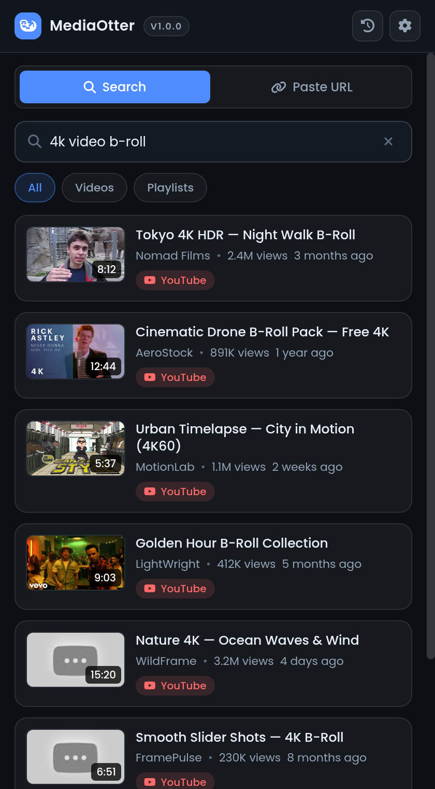
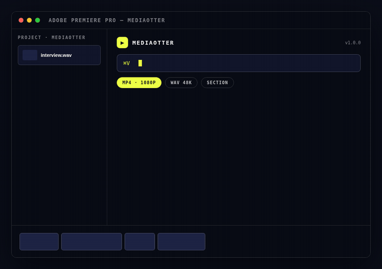
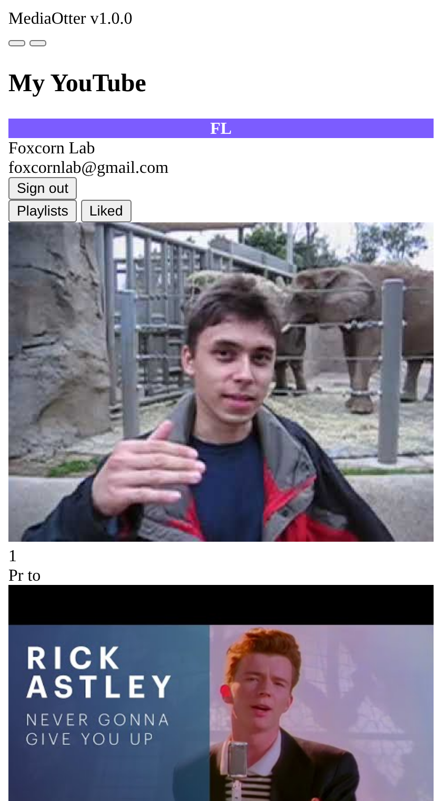
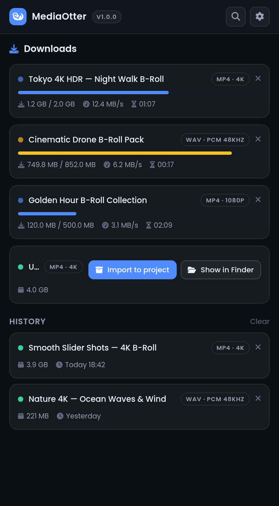
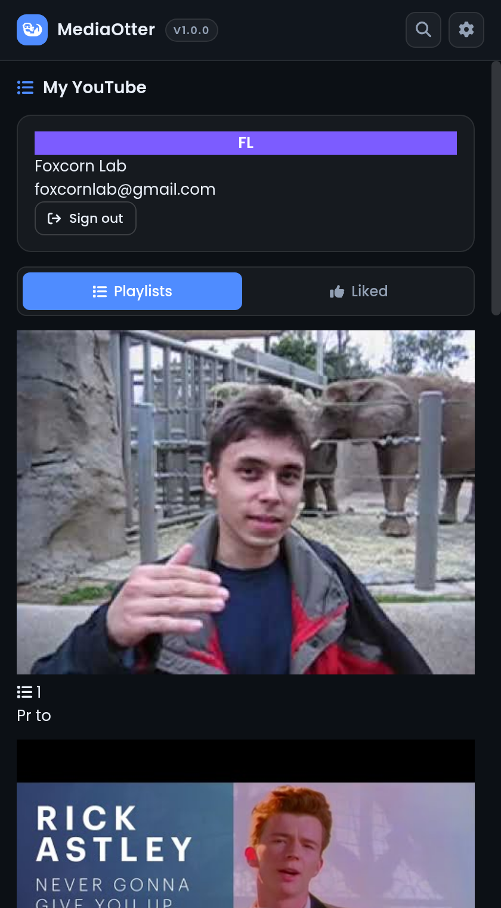

#1 Search
YouTube, Inside Premiere

Search, filter and pick videos without leaving the panel — thumbnails, durations, channel names, all inline.
Open Source • MIT License
Get the desktop extension
Download the zipInstall via terminal
MediaOtter lives inside Premiere Pro & After Effects — search YouTube, paste any of 1000+ sites, and the MP4 or WAV lands in your project bin. No browser. No exports. No accounts.

#1 Search

Search, filter and pick videos without leaving the panel — thumbnails, durations, channel names, all inline.
#2 Paste

1000+ extractors under the hood: Twitch, Vimeo, Instagram, X, SoundCloud. Paste a URL, get a file.
#3 Download

Percent, speed, ETA and size for every download. Pause, resume, cancel — from inside the panel.
#4 Organize

Line up a whole playlist of B-roll and let it work through the queue while you keep cutting.
#5 Trim
Set a start and end time and grab only the moment you need — no more downloading then cutting.
#6 Import
One click drops the finished MP4 or 48kHz WAV into a MediaOtter bin, ready on your sequence.
Dark · Focused · Panel-native
FAQ • Good to know
Cmd+Shift+4 on Mac), and submit. Want a new feature instead? Request one here.Want the full guide? Read the docs →